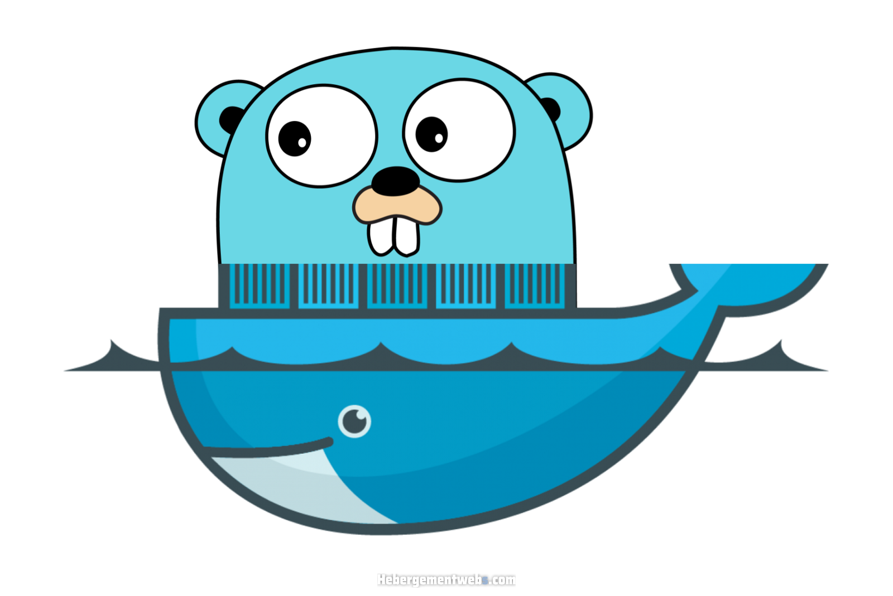

<section class="section" id="features">
        <div class="container">
            <div class="row">
                <div class="left-image col-lg-5 col-md-12 col-sm-12 mobile-bottom-fix-big" data-scroll-reveal="enter left move 30px over 0.6s after 0.4s">
                    
                </div>
                <div class="right-text offset-lg-1 col-lg-6 col-md-12 col-sm-12 mobile-bottom-fix">
                    <ul>
                        <li data-scroll-reveal="enter right move 30px over 0.6s after 0.4s">
                            <!---->
                            <div class="text">
                                <h4>Simplicidad</h4>
                                <p>Lenguajes como C++, Java o C# son más pesados y voluminosos que Go. La simplicidad es la característica principal de Go. Con una sintaxis clara, limpia y organizada.</p>
                            </div>
                        </li>
                        <li data-scroll-reveal="enter right move 30px over 0.6s after 0.5s">
                            <!---->
                            <div class="text">
                                <h4>Funcionalidades</h4>
                                <p>Go dispone de un recolector de basura como la mayoría de los lenguajes modernos. El recolector de basura de Go está siendo reimplementado para reducir la latencia todo lo posible.</p>
                            </div>
                        </li>
                        <li data-scroll-reveal="enter right move 30px over 0.6s after 0.6s">
                            <!---->
                            <div class="text">
                                <h4>Facilidad de uso</h4>
                                <p>Go usa tipado estático y es tan eficiente como C. Permite detectar errores en la sintaxis durante la compilación y no durante la ejecución, a diferencia de otros lenguajes compilados. </p>
                            </div>
                        </li>
                        <li data-scroll-reveal="enter right move 30px over 0.6s after 0.6s">
                            <!---->
                            <div class="text">
                                <h4>Compatibilidad</h4>
                                <p>Go es compatible con sistemas Windows, Mac OS X, Linux y FreeBSD.</p>
                            </div>
                        </li>
                    </ul>
                </div>
            </div>
        </div>
    </section>
